We’re going to create some plots using functions from the ggplot2 package. R packages usually contain functions related to a specific activity, which in this case is data visualisation, and also documentation which outlines how the functions work.
We’ve already installed the ggplot2 package. It was installed as part of the tidyverse package, which is a popular collection of packages developed by the same group of people.
Reading In Data
Each time we start a new RStudio session, we need to load the packages that we want to use, and to do this we use library().
library(tidyverse)
── Attaching core tidyverse packages ──────────────────────── tidyverse 2.0.0 ──
✔ dplyr 1.2.0 ✔ readr 2.1.6
✔ forcats 1.0.1 ✔ stringr 1.6.0
✔ ggplot2 4.0.2 ✔ tibble 3.3.1
✔ lubridate 1.9.5 ✔ tidyr 1.3.2
✔ purrr 1.2.1
── Conflicts ────────────────────────────────────────── tidyverse_conflicts() ──
✖ dplyr::filter() masks stats::filter()
✖ dplyr::lag() masks stats::lag()
ℹ Use the conflicted package (<http://conflicted.r-lib.org/>) to force all conflicts to become errors
After loading packages, the next thing we often need to do is to load some data into R. To load our spreadsheet in we use the read_csv() function from the readr package (which is loaded as part of the tidyverse package), and we’ll store it in an object called surveys.`
Rows: 16878 Columns: 13
── Column specification ────────────────────────────────────────────────────────
Delimiter: ","
chr (6): species_id, sex, genus, species, taxa, plot_type
dbl (7): record_id, month, day, year, plot_id, hindfoot_length, weight
ℹ Use `spec()` to retrieve the full column specification for this data.
ℹ Specify the column types or set `show_col_types = FALSE` to quiet this message.
You’ll notice some useful information printed in the console, including the number of rows and columns, and the number of different column types. chr refers to character, or columns containing text values, while dbl refers to double, another name for numeric values.
Now we can see surveys in our environment pane and we can click on it to take a look.
This dataset is taken from the Portal Project, a long-term study from Portal, Arizona, in the Chihuahuan desert, which measures features of desert-dwelling mammals. Click on the surveys object in the environment pane to see the data.
It’s worth pointing out, anything we do to the data in R is not changed in the file we read in.
To get a bit more information about any object in R, we can look at it’s structure:
str(surveys)
spc_tbl_ [16,878 × 13] (S3: spec_tbl_df/tbl_df/tbl/data.frame)
$ record_id : num [1:16878] 1 2 3 4 5 6 7 8 9 10 ...
$ month : num [1:16878] 7 7 7 7 7 7 7 7 7 7 ...
$ day : num [1:16878] 16 16 16 16 16 16 16 16 16 16 ...
$ year : num [1:16878] 1977 1977 1977 1977 1977 ...
$ plot_id : num [1:16878] 2 3 2 7 3 1 2 1 1 6 ...
$ species_id : chr [1:16878] "NL" "NL" "DM" "DM" ...
$ sex : chr [1:16878] "M" "M" "F" "M" ...
$ hindfoot_length: num [1:16878] 32 33 37 36 35 14 NA 37 34 20 ...
$ weight : num [1:16878] NA NA NA NA NA NA NA NA NA NA ...
$ genus : chr [1:16878] "Neotoma" "Neotoma" "Dipodomys" "Dipodomys" ...
$ species : chr [1:16878] "albigula" "albigula" "merriami" "merriami" ...
$ taxa : chr [1:16878] "Rodent" "Rodent" "Rodent" "Rodent" ...
$ plot_type : chr [1:16878] "Control" "Long-term Krat Exclosure" "Control" "Rodent Exclosure" ...
- attr(*, "spec")=
.. cols(
.. record_id = col_double(),
.. month = col_double(),
.. day = col_double(),
.. year = col_double(),
.. plot_id = col_double(),
.. species_id = col_character(),
.. sex = col_character(),
.. hindfoot_length = col_double(),
.. weight = col_double(),
.. genus = col_character(),
.. species = col_character(),
.. taxa = col_character(),
.. plot_type = col_character()
.. )
- attr(*, "problems")=<externalptr>
Plotting with ggplot2
The gg in ggplot2 stands for “grammar of graphics”, which refers to a particular way of creating plots using a consistent vocabulary and layering different elements on. Therefore, we only need small changes to our code if the underlying data changes or we decide to make a box plot instead of a scatter plot. This approach helps you create publication-quality plots with minimal adjusting and tweaking.
ggplot plots are built step by step by adding new layers, which allows us to customise and test as we go. We’re going to use the following template to build our plots:
First we need to specify the data we want to use. Next, we can see that the ggplot() call has a function nested within it, aes(), which relates to aesthetic mappings. This is where we specify which parts of the data should be mapped to different axes on our plot. Finally, we need to specify the geometry we want to use, or in other words, the plot type. The geometry function we use is added to the end with a + sign.
Let’s go through step by step:
ggplot(data = surveys)
We get a blank plot because we haven’t told ggplot() which variables we want to correspond to parts of the plot.
ggplot(data = surveys, mapping =aes(x = weight, y = hindfoot_length))
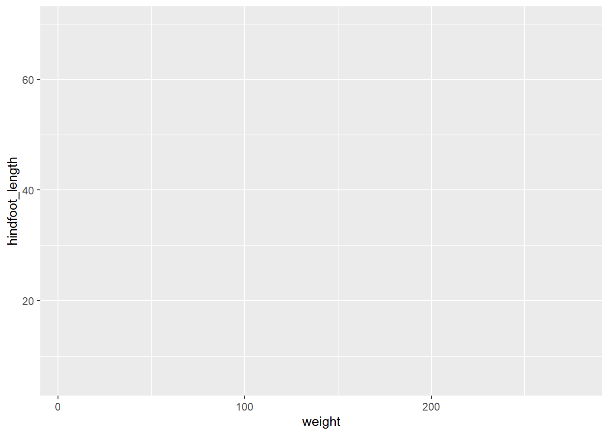
Now we’ve got a plot with x and y axes corresponding to variables from surveys. However, we haven’t specified how we want the data to be displayed. We do this using geom_ functions, which specify the type of geometry we want, such as points, lines, or bars. We can add a geom_point() layer to our plot by using the + sign. We indent onto a new line to make it easier to read, and we have to end the first line with the + sign.
Warning: Removed 3081 rows containing missing values or values outside the scale range
(`geom_point()`).
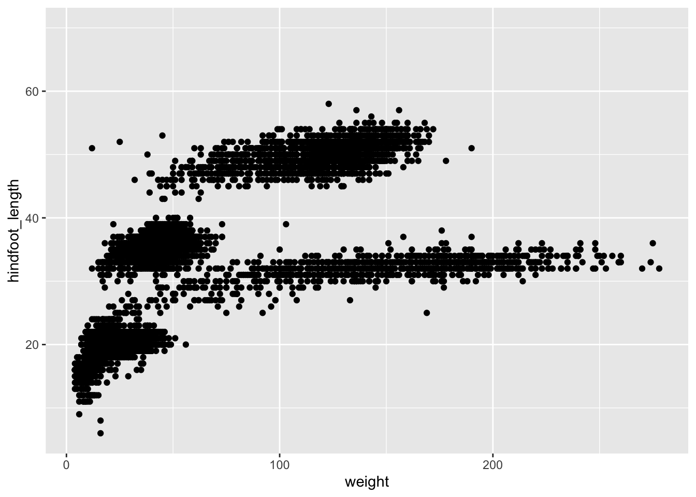
You may notice a warning that missing values were removed. If a variable necessary to make the plot is missing from a given row of data (in this case, hindfoot_length or weight), that observation can’t be plotted. ggplot2 warns us that this has happened to ensure we know there are missing values.
Another common type of message is an error, which means R can’t execute the command. This is commonly due to misspelling, or missing punctuation such as brackets or commas.
We can change the colour of the points by supplying a colour argument inside the geometry function.
Warning: Removed 3081 rows containing missing values or values outside the scale range
(`geom_point()`).
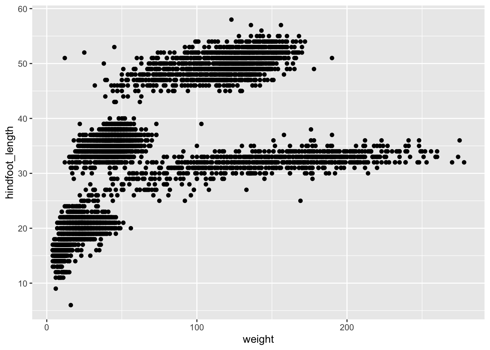
Boxplots
If we wanted to use a parametric statistical test like ANOVA, first we would need to check some assumptions. One of these assumptions is that the data are normally distributed. We can get a quick idea of this using a boxplot. Let’s look at hindfoot_length grouped by plot_type.
Warning: Removed 2733 rows containing non-finite outside the scale range
(`stat_boxplot()`).
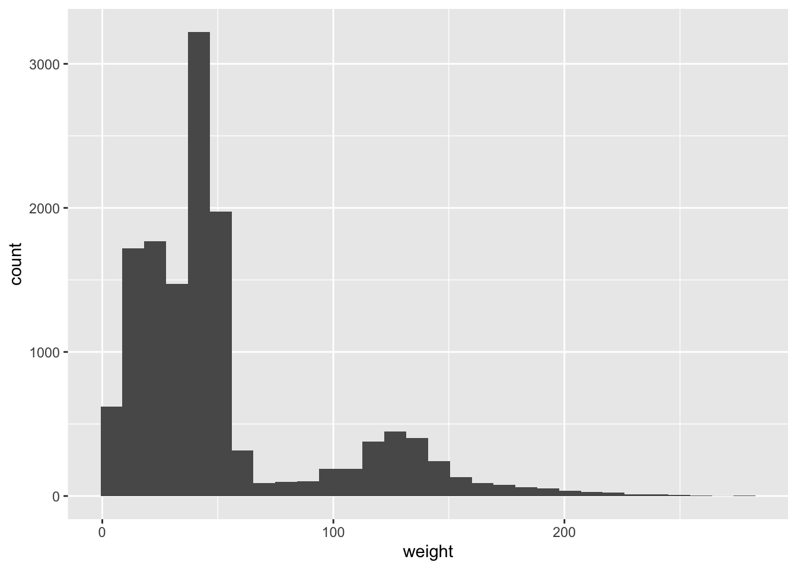
If we wanted to split our plot into separate plots to look at how the distribution of data differs by sex we can use faceting. Here we’ll supply the column name we want to facet by within the vars() function, inside the facet_wrap() function. We can also specify how we want the plots to be arranged by supplying either nrow or ncol.
Whilst a box plot is good for checking assumptions, it is best suited for looking at the distribution of values across a certain variable. If we want a graphical representation of the relationship between more than one variable, we need something else. We have already shown you scatter plots, but what if one of our two variables is categorical? In that case, we need a graph that represents this appropriately. One such example would be a bar chart.
Let’s take another look at hindfoot_length against plot_type. This time we add a ‘geom_col’ layer.
Warning: Removed 2733 rows containing missing values or values outside the scale range
(`geom_col()`).
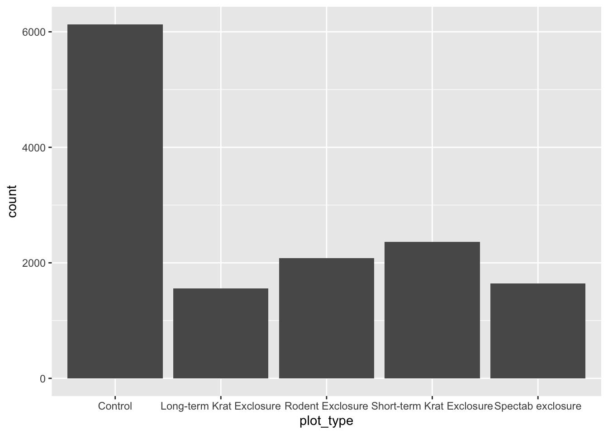
We’ve got a graph, but not a very useful one. It seems as though ‘geom_col’ defaults to summing the values in our y variable for every value in our x variable. Whilst this does highlight the relationship between these two variables, it’s not quite appropriate for our publication. What we want to do instead is to plot the average hindfoot_length for each plot_type.
There are a few different ways of doing this in R. One would be to use the package ‘dplyr’ which has a host of tools that allow you to filter, group and summarise data. This would allow us to create a new tibble (e.g., ‘surveys_summarised’) with the summary statistics that we can then reference instead of ‘surveys’.
The method we will use here is the ‘stat_summary’ function in ggplot. This replaces our ‘geom_col’ layer and instead allows us to pass in an argument that states the function to apply to the data (e.g., mean) as well as a geom to plot with.
Warning: The `fun.y` argument of `stat_summary()` is deprecated as of ggplot2 3.3.0.
ℹ Please use the `fun` argument instead.
Warning: Removed 2733 rows containing non-finite outside the scale range
(`stat_summary()`).
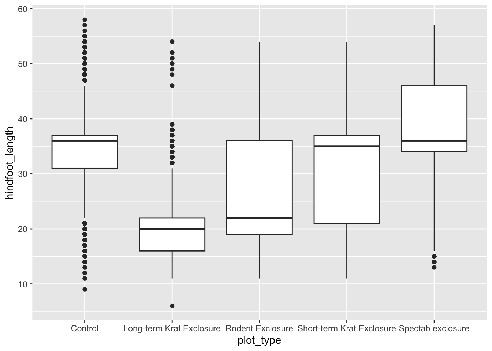
That looks much better, but while we’re here why not add another variable? It seems highly unlikely that only plot_type affects hindfoot_length. Let’s create a grouped bar chart by sex. Just like we did earlier, this involves adding another aesthetic mapping to our original ggplot call. We want to change the colour of the entire column for each sex, so we need to use ‘fill = sex’. If we were to pass ‘colour = sex’, only the outline of our columns would change colour.
ggplot(data = surveys, mapping =aes(x= plot_type, y = hindfoot_length, fill = sex)) +stat_summary(fun.y ="mean", geom ="col")
Warning: Removed 2733 rows containing non-finite outside the scale range
(`stat_summary()`).
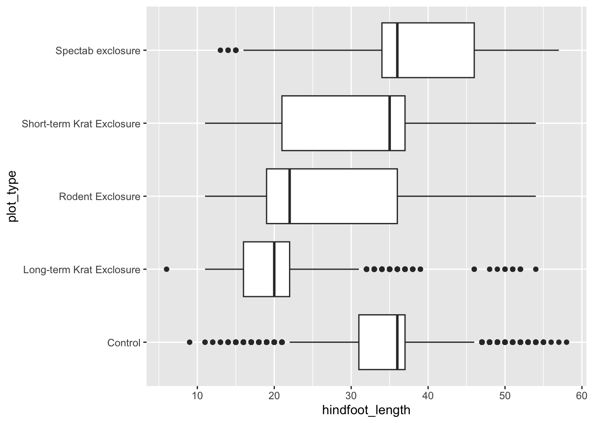
Uh oh, that’s not quite the look we are going for. By default ggplot has stacked our columns behind one another, so we can’t see anything! To fix this, we need to pass an argument that you may come across quite frequently when using ggplot, ‘position_dodge()’, which prevents geoms from overlapping.
ggplot(data = surveys, mapping =aes(x= plot_type, y = hindfoot_length, fill = sex)) +stat_summary(fun.y ="mean", geom ="col", position =position_dodge())
Warning: Removed 2733 rows containing non-finite outside the scale range
(`stat_summary()`).
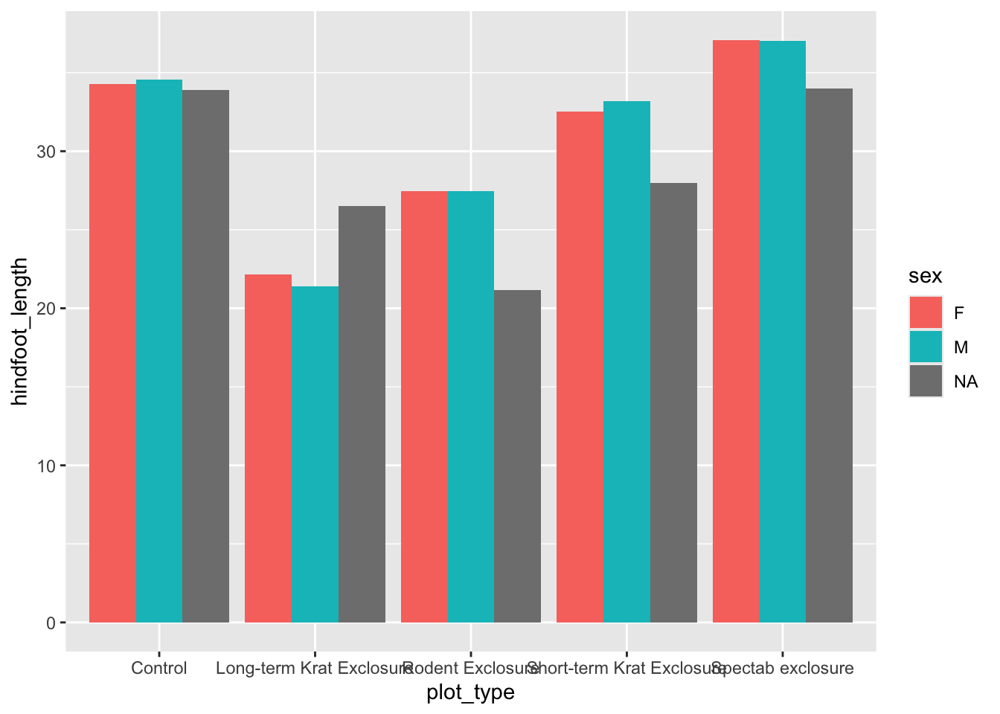
That looks much better. But we’re still not quite there yet. Now we need some error bars to show how our data vary around the mean. To do this, we once again need to use ‘stat_summary’. This is because we are computing another aggregate (standard deviation) that is not found in our original tibble (‘surveys’). We need to pass a few arguments here, ‘fun.data = mean_sdl’ is used to calculate our mean and standard deviation and ‘fun.args’ allows us to specify the multiplier we want applied to our error bars (1 is equal to our mean +/- 1 * SD). We use ‘fun.data’ here rather than ‘fun.y’ as we need the function to return multiple values, one for our mean + SD, and one for our mean - SD. Our geom will be ‘errorbar’ and we want to specify how wide our errorbars are with ‘width’. We also need to make sure to pass ‘position_dodge()’ with our error bars too. We specify a value of 0.9 for our error bars as this seems to work best to center each error bar on its respective column, but have a play around and see how changing this value moves the position of the error bar.
ggplot(data = surveys, mapping =aes(x= plot_type, y = hindfoot_length, fill = sex)) +stat_summary(fun ="mean", geom ="col", position =position_dodge()) +stat_summary(fun.data ="mean_sdl", fun.args =list(mult =1), geom ="errorbar", width =0.2, position =position_dodge(0.9))
Warning: Removed 2733 rows containing non-finite outside the scale range
(`stat_summary()`).
Removed 2733 rows containing non-finite outside the scale range
(`stat_summary()`).
Warning: Computation failed in `stat_summary()`.
Caused by error in `fun.data()`:
! The package "Hmisc" is required.
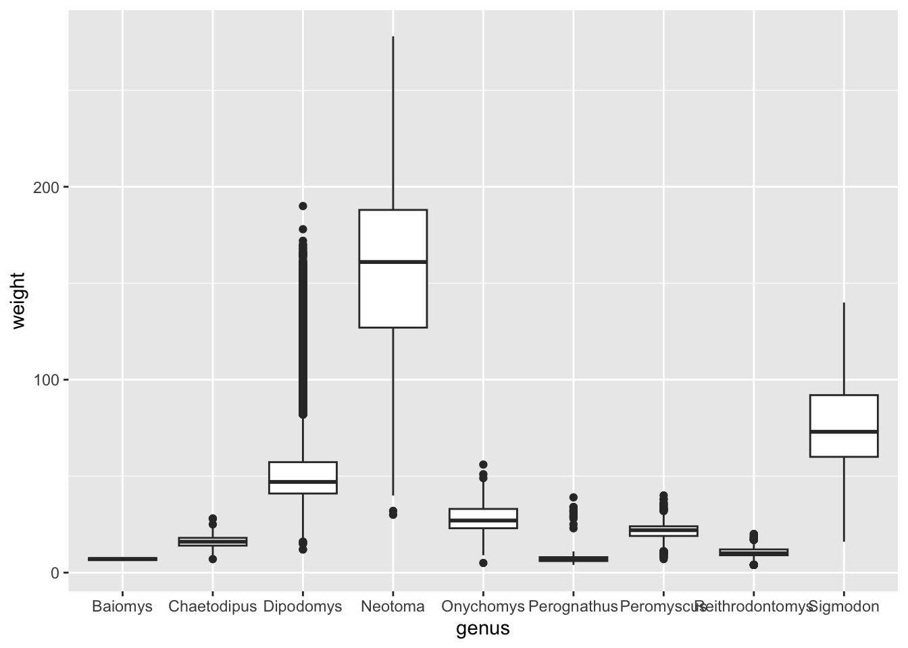
That’s better. Although you may notice that the bar corresponding to the NA sex for the Spectab exclosure plot type does not have an error bar. This is because there’s only one valid observation here, so that standard deviation cannot be calculated. I will leave this in for the moment, but later we will discover how you can remove this.
Changing themes
So far we’ve been focused on the appearance of the parts of our plot related to the data. But we can also change many non-data components. There are several ways of doing this, but here we will use theme_ functions. These allow us to change the overall appearance of our plot.
Before we do this, let’s assign what we have to an object called myplot. We will do this by using the assignment arrow <-. Now when we run the name of our ggplot object, myplot, R will return the plot, just as it did when we were typing out the entire code block.
myplot <-ggplot(data = surveys, mapping =aes(x= plot_type, y = hindfoot_length, fill = sex)) +stat_summary(fun.y ="mean", geom ="col", position =position_dodge()) +stat_summary(fun.data ="mean_sdl", fun.args =list(mult =1), geom ="errorbar", width =0.2, position =position_dodge(0.9))myplot
Warning: Removed 2733 rows containing non-finite outside the scale range
(`stat_summary()`).
Removed 2733 rows containing non-finite outside the scale range
(`stat_summary()`).
Warning: Computation failed in `stat_summary()`.
Caused by error in `fun.data()`:
! The package "Hmisc" is required.
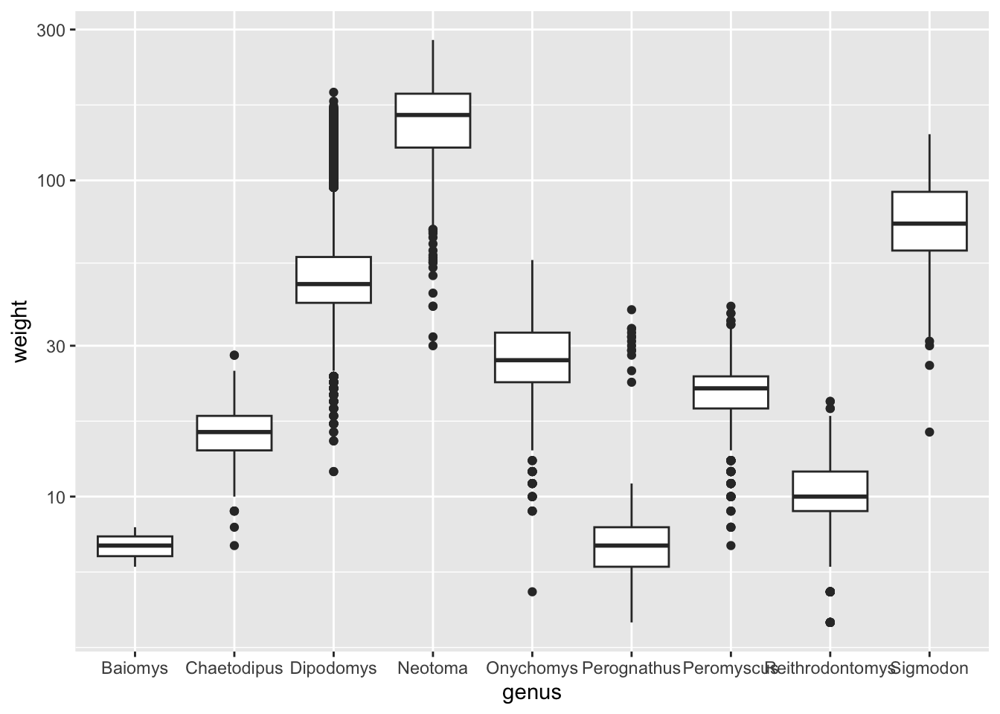
Now if we want to make any additional changes we no longer need to type out all the code. We can just refer to the object myplot and add additional layers as we normally would with ggplot.
First, let’s try a black and white theme.
myplot +theme_bw()
Warning: Removed 2733 rows containing non-finite outside the scale range
(`stat_summary()`).
Removed 2733 rows containing non-finite outside the scale range
(`stat_summary()`).
Warning: Computation failed in `stat_summary()`.
Caused by error in `fun.data()`:
! The package "Hmisc" is required.
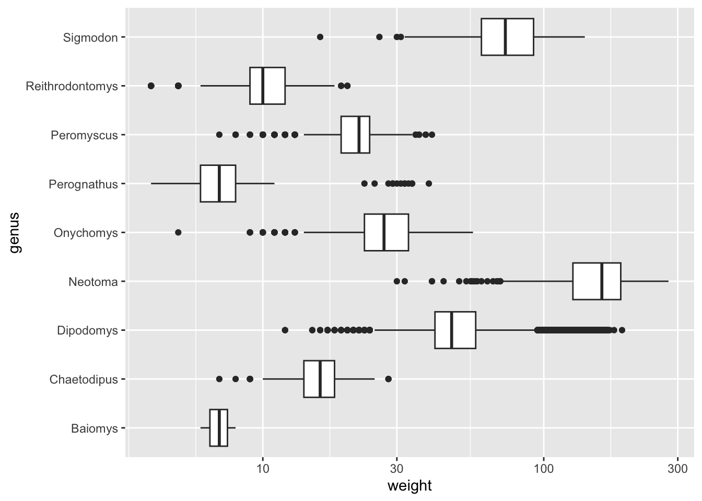
As you can see, a number of parts of the plot have changed. The background is no longer grey, there is a black border, and the major and minor gridlines are now grey. theme_ functions usually control many aspects of a plot’s appearance all at once, for the sake of convenience. Let’s try another.
myplot +theme_classic()
Warning: Removed 2733 rows containing non-finite outside the scale range
(`stat_summary()`).
Removed 2733 rows containing non-finite outside the scale range
(`stat_summary()`).
Warning: Computation failed in `stat_summary()`.
Caused by error in `fun.data()`:
! The package "Hmisc" is required.
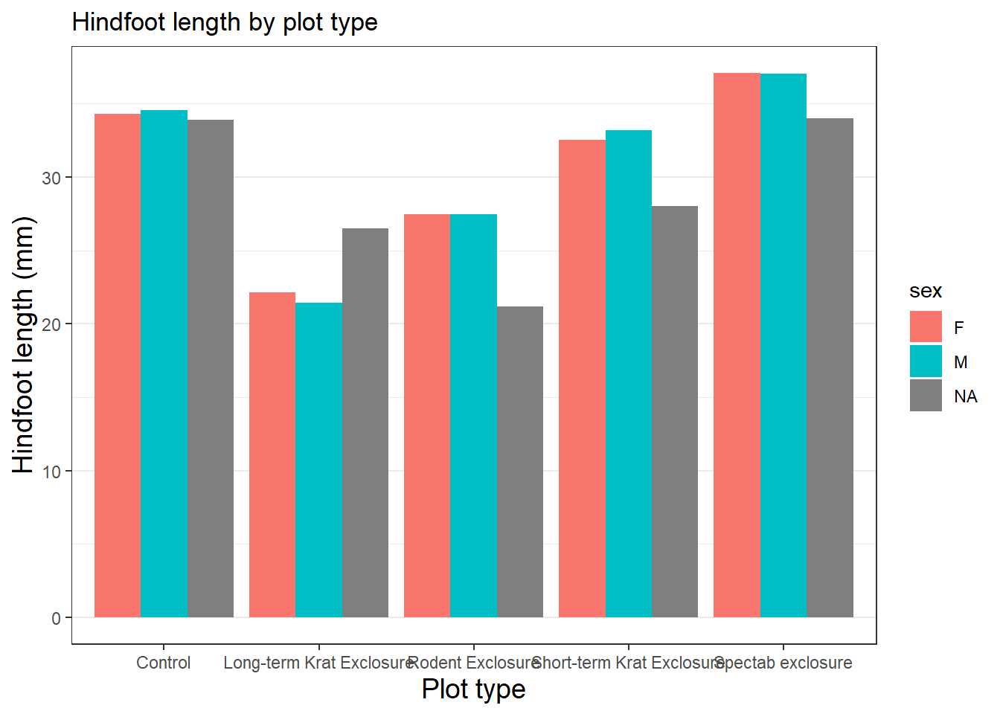
I could see uses for this theme, most likely in a scatter plot, or when the relationship between variables is simple and easy to see, but here it adds a bit of confusion. Let’s return to our theme_bw() and make some additional changes.
To change parts of a plot, we can use the theme() function, which can take many different arguments to change things about the text, grid lines, background color, and more. Let’s try changing the size of the text on our axis titles. We can do this by specifying that the axis.title should be an element_text() with size set to 14.
Warning: Removed 2733 rows containing non-finite outside the scale range
(`stat_summary()`).
Removed 2733 rows containing non-finite outside the scale range
(`stat_summary()`).
Warning: Computation failed in `stat_summary()`.
Caused by error in `fun.data()`:
! The package "Hmisc" is required.
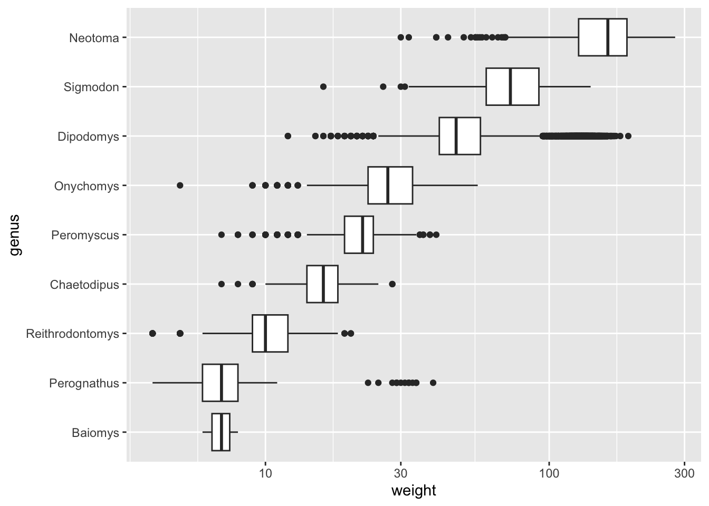
Another change we might want to make is to remove the vertical grid lines. Since our x axis is categorical, those grid lines aren’t as useful. To do this, we will change argument for panel.grid.major.x to element_blank().
Warning: Removed 2733 rows containing non-finite outside the scale range
(`stat_summary()`).
Removed 2733 rows containing non-finite outside the scale range
(`stat_summary()`).
Warning: Computation failed in `stat_summary()`.
Caused by error in `fun.data()`:
! The package "Hmisc" is required.
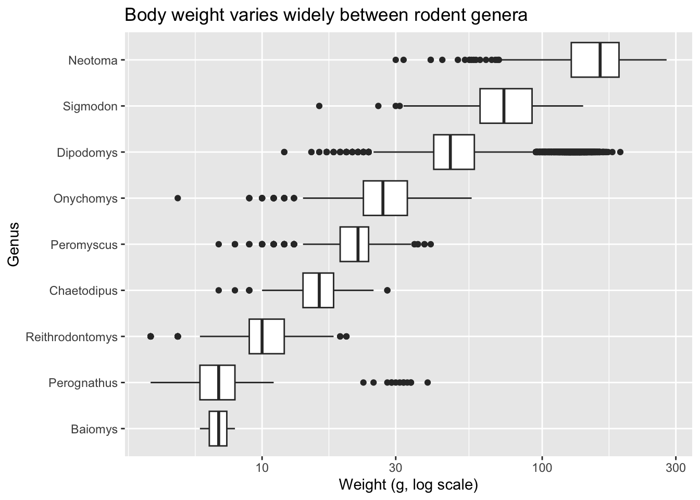
Changing labels
Our plot is really shaping up now. However, we probably want to make our axis titles nicer, and perhaps add a main title to the plot. We can do this using the labs() function:
Warning: Removed 2733 rows containing non-finite outside the scale range
(`stat_summary()`).
Removed 2733 rows containing non-finite outside the scale range
(`stat_summary()`).
Warning: Computation failed in `stat_summary()`.
Caused by error in `fun.data()`:
! The package "Hmisc" is required.
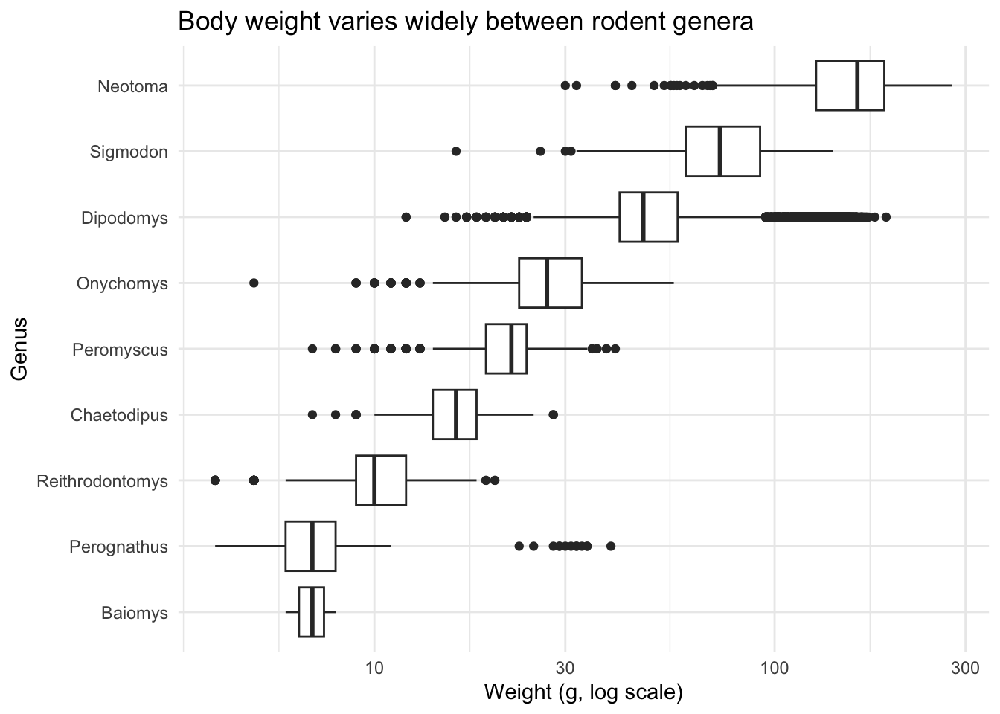
We can adjust the position of the title by returning to our theme function and specifying the horizontal justification (hjust) of our plot.title. Setting it to 0.5 centers the title. 1 aligns it to the right side of the plot, 0 to the left. At the same time, we can also increase the size of the text, by setting our size parameter, just like we did with axis.title.
Warning: Removed 2733 rows containing non-finite outside the scale range
(`stat_summary()`).
Removed 2733 rows containing non-finite outside the scale range
(`stat_summary()`).
Warning: Computation failed in `stat_summary()`.
Caused by error in `fun.data()`:
! The package "Hmisc" is required.
Now we’re almost there. The last thing to do is take care of those long, overlapping axis tick labels. As with everything, we’ve got a number of options to achieve this. The first method we will describe is to include another argument in our theme_ function. This time we want to specify the text on our x-axis (axis.text.x) and we want to rotate our text by 45 degrees. We also need to specify how we are adjusting our labels horizontally (hjust) and vertically (vjust). using 0.5 ensures our labels are centred at each plot type.
Warning: Removed 2733 rows containing non-finite outside the scale range
(`stat_summary()`).
Removed 2733 rows containing non-finite outside the scale range
(`stat_summary()`).
Warning: Computation failed in `stat_summary()`.
Caused by error in `fun.data()`:
! The package "Hmisc" is required.
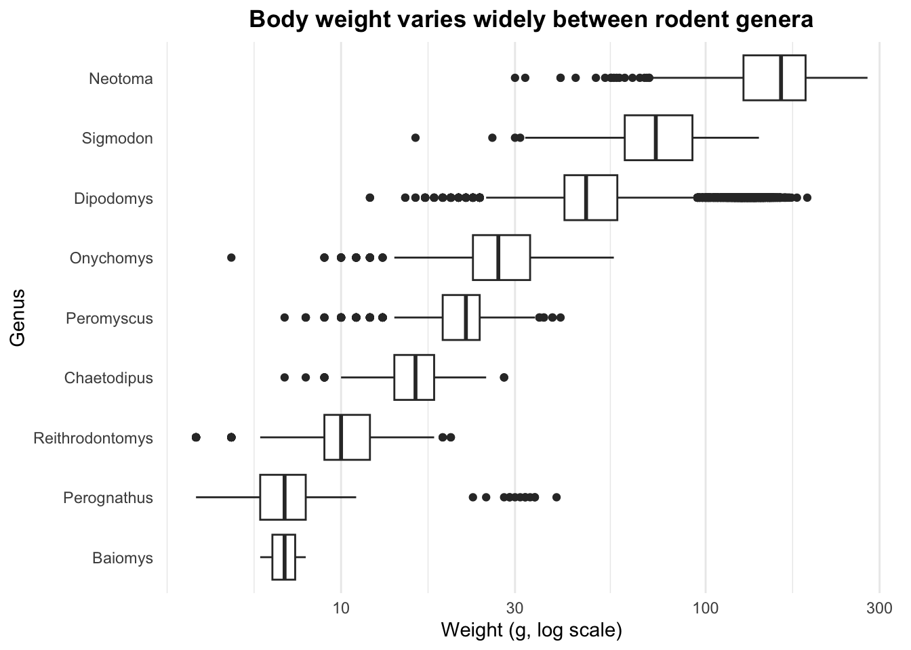
That looks nice, but just to illustrate how versatile R is let’s find another way of solving the same problem. This time we will use scale_ functions. These are a family of functions that allow you to customise both the x (scale_x_) and y (scale_y_) axes on a slightly less granular scale compared to our theme_ functions. Here we will tell R to wrap our labels and insert line breaks where appropriate. We do this by using the label_wrap() function from the library scales.
library(scales)
Attaching package: 'scales'
The following object is masked from 'package:purrr':
discard
The following object is masked from 'package:readr':
col_factor
Warning: Removed 2733 rows containing non-finite outside the scale range
(`stat_summary()`).
Removed 2733 rows containing non-finite outside the scale range
(`stat_summary()`).
Warning: Computation failed in `stat_summary()`.
Caused by error in `fun.data()`:
! The package "Hmisc" is required.
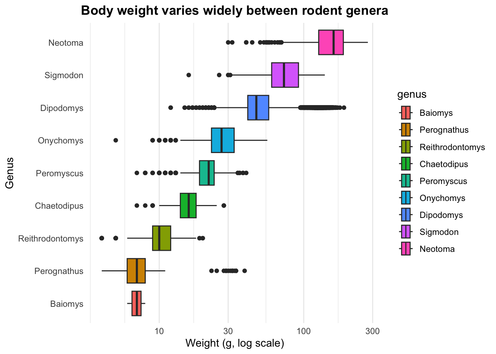
Finally, lets sort out that legend. First we can capitalise the name of the legend by adding another argument in our labs parameter. Given that we initially mapped sex to the fill of the columns, that is the name of what we will be changing.
Warning: Removed 2733 rows containing non-finite outside the scale range
(`stat_summary()`).
Removed 2733 rows containing non-finite outside the scale range
(`stat_summary()`).
Warning: Computation failed in `stat_summary()`.
Caused by error in `fun.data()`:
! The package "Hmisc" is required.
Now let’s change the names of the sexes from ‘M’ to Male, ‘F’ to Female, and ‘NA’ to Unknown. To do this we will use another of our scale_ functions, but now it will be referring to the discrete values of our fill mapping. Therefore we will use scale_fill_discrete.
Warning: Removed 2733 rows containing non-finite outside the scale range
(`stat_summary()`).
Removed 2733 rows containing non-finite outside the scale range
(`stat_summary()`).
Warning: Computation failed in `stat_summary()`.
Caused by error in `fun.data()`:
! The package "Hmisc" is required.
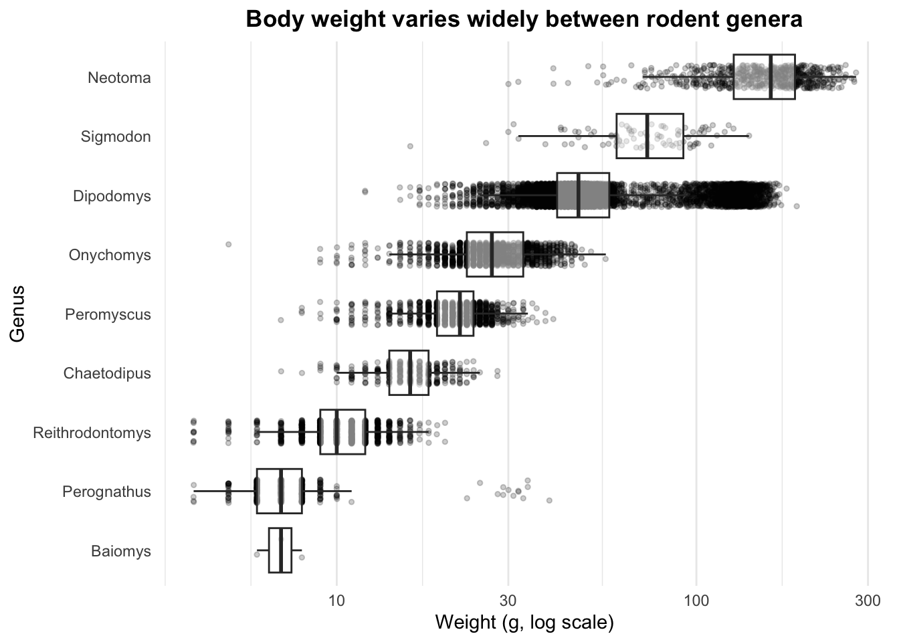
And finally let’s increase the size of the legend title. How might this be done? Think about how we have increased the size of our axis titles and plot titles.
The last thing we will demonstrate is how to change our axis tick marks. By default ggplot includes some quite sensible values, but these might not be appropriate for the plots you produce.
Lets start by telling ggplot how many tick marks we want. We can do this using one of our scale_ functions. Because we are referring to our y axis, which uses a continuous scale, we want to specify scale_y_continuous. ggplot refers to the number of tick marks as n.breaks. Currently we have 5 (0, 10, 20, 30, 40, 50), but lets make that 10. This will force it to include 5, 15, 25, etc.
myplot +scale_y_continuous(n.breaks =10)
Warning: Removed 2733 rows containing non-finite outside the scale range
(`stat_summary()`).
Removed 2733 rows containing non-finite outside the scale range
(`stat_summary()`).
Warning: Computation failed in `stat_summary()`.
Caused by error in `fun.data()`:
! The package "Hmisc" is required.
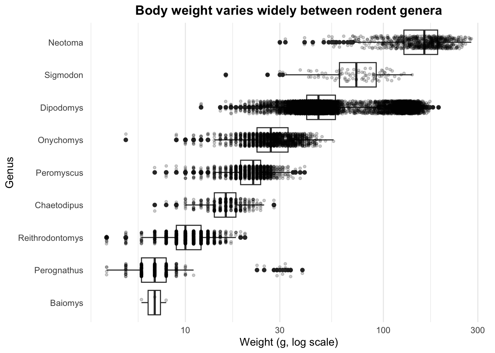
We could explicitly say what we want those breaks to be, instead of how many there are. Here we will use breaks instead of n.breaks. We can choose some strange numbers to include here, to make it obvious what this parameter does.
Warning: Removed 2733 rows containing non-finite outside the scale range
(`stat_summary()`).
Removed 2733 rows containing non-finite outside the scale range
(`stat_summary()`).
Warning: Computation failed in `stat_summary()`.
Caused by error in `fun.data()`:
! The package "Hmisc" is required.
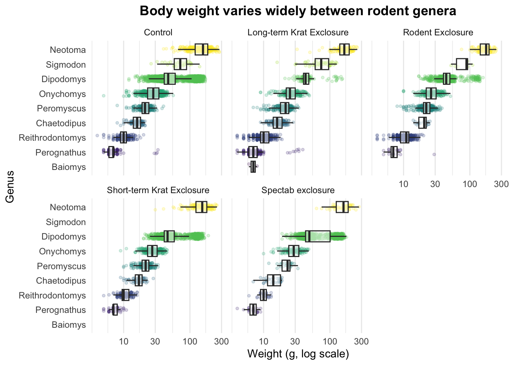
Finally, we could give ggplot a sequence of numbers to use. This requires using seq() which takes three arguments: our starting value, our finishing value, and how much to increment each time. Again lets choose some strange values to make it obvious.
Warning: Removed 2733 rows containing non-finite outside the scale range
(`stat_summary()`).
Removed 2733 rows containing non-finite outside the scale range
(`stat_summary()`).
Warning: Computation failed in `stat_summary()`.
Caused by error in `fun.data()`:
! The package "Hmisc" is required.
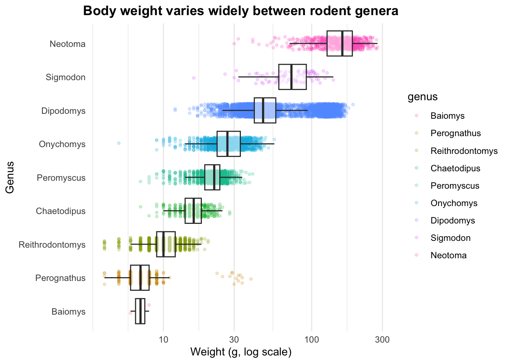
I don’t think any of these are actually better than the default values, so lets refer back to that and assign it to a new object ‘final_plot’ so that we can export it.
final_plot <- myplotfinal_plot
Warning: Removed 2733 rows containing non-finite outside the scale range
(`stat_summary()`).
Removed 2733 rows containing non-finite outside the scale range
(`stat_summary()`).
Warning: Computation failed in `stat_summary()`.
Caused by error in `fun.data()`:
! The package "Hmisc" is required.
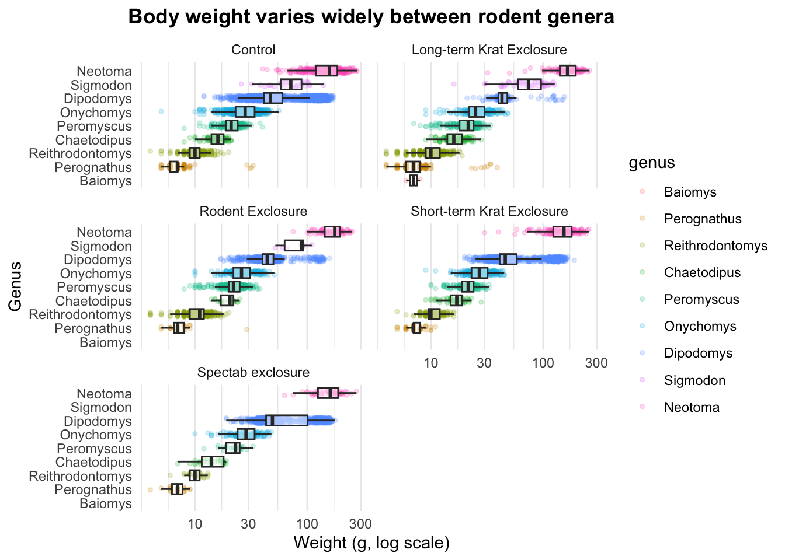
Exporting plots
Once we’re happy with our plot, we can save it using the ggsave() function.
We need to specify the following arguments:
filename: the filename we’re using to save our plot, including the file type of the image (e.g. “.jpg”, “.png”, “.tif”.
plot: the name of the plot object we want to save.
You can also specify one of the below optional arguments to set where the image will be saved:
path: the path of the directory we want to save our plot in (if not already in our filename).
create.dir: whether to create a new directory if the directory specified in path doesn’t exist.
File type
ggplot supports both vector and raster formats. Vector formats store images as instructions, which means they can be resized without any loss of quality, whereas raster formats store images as fixed arrays of pixels, meaning they cannot be resized without losing quality. The JPEG format we used above is an example of a raster format - the image resolution is fixed when it is saved, so it cannot be resized very much without looking bad.
Supported vector formats:
.pdf (Portable Document Format, when unflattened)
.svg (Scalable Vector Graphics)
.eps (Encapsulated PostScript)
Supported raster formats:
.png (Portable Network Graphics)
.jpg or .jpeg (Joint Photographic Experts Group)
.tiff or .tif (Tagged Image File Format)
.bmp (Bitmap)
Sometimes a journal will ask for figures in a vector format so that they can size the image appropriately based on the typesetting of the document. Otherwise, most of the time you’ll select a raster format and set the size of the image yourself. To do this you need to use the following optional arguments:
width & height: plot size in units defined by the units argument.
units: one of the following - “in”, “cm”, “mm”, “px” (defaults to inches).
dpi: plot resolution in dots per inch (defaults to 300).
Clarifying DPI
Confusion around DPI is common. People often conflate DPI with other attributes of images relating to their size, or to the supposed ‘quality’ of an image.
There are three properties that determine the size and quality of an image:
Resolution: the pixel dimension of a screen or an object on a screen, expressed as width x height (e.g. 1920x1080).
Print size: the physical dimensions of an image when printed, typically measured in inches for photos.
DPI: Dots per inch, or the density of ink dots printed onto paper.
To obtain the print size of an image, the resolution is divided by the DPI set inside the image metadata. For example, if an image has a resoltuion of 900x900 pixels, and the DPI in the image is set to 300, then the image will be printed at 3 x 3 inches. The DPI setting inside the metadata of a digital image has absolutely no bearing on how that image is represented on a screen, only when it is printed or added into something like a Word doc which shows you how a document will look when printed.
It’s common for journals to ask for figures based only on a particular DPI (often 300), but this by itself is meaningless. You could send them an image with a resolution of 150 x 150 pixels and a DPI set to 300, but when printed it would only be half an inch by half an inch. What they really mean is they want images with “a resolution large enough to display the image at the chosen size when printed.”
If you need to set a DPI and physical size, then the resolution will be determined by multiplying the two together.For example, let’s say we need our plot to be 3 x 3 inches on the page and 600 DPI.
This results in an image with those pixel dimensions, and the default value of 300 DPI has been entered into the image metadata. This means the image will be sized at 5 x 4 inches on a page by default, and if it is resized to be larger than this, it will look bad.